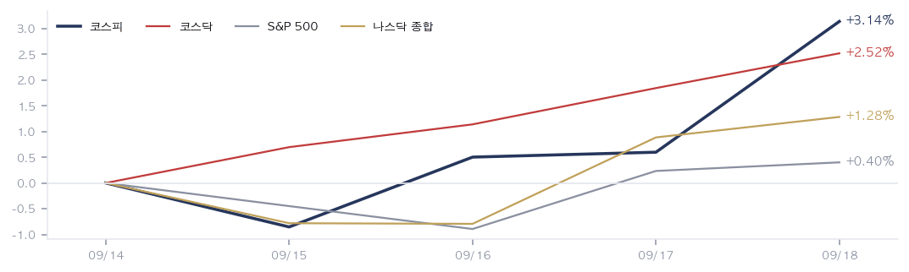
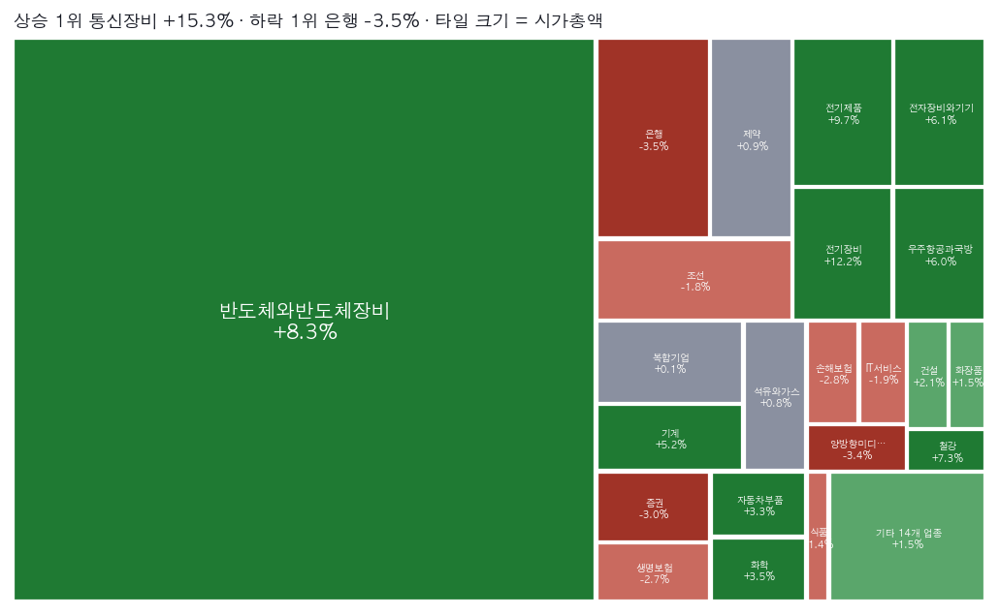
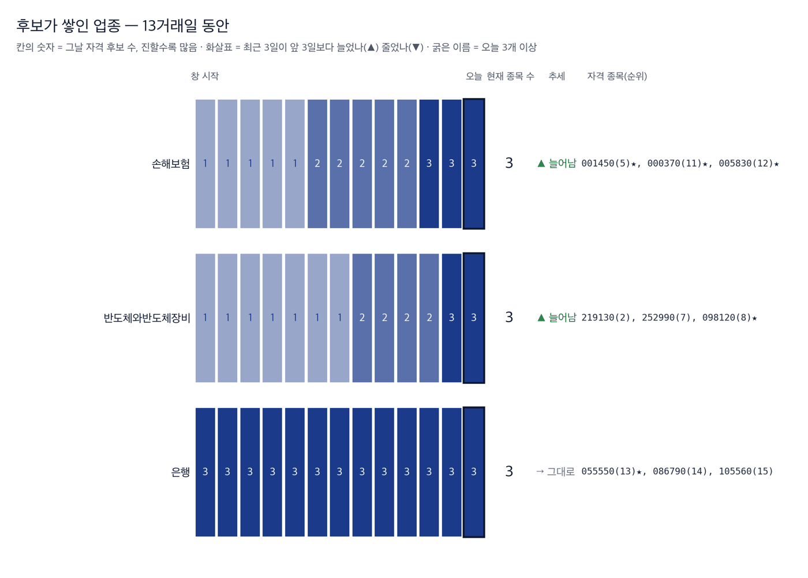

|
ZekiRex™ Apex KR 주간 총결산 9/14~9/18
시장이 한 주 동안 한 일 · 1/3
데이터 기준 9/18 종가 |
ZekiRex™ |
|
|
| 저희가 정한 규칙이 고른 종목과 그 성적을 매일 그대로 싣습니다. 맞았든 틀렸든 지우지 않습니다. |
| • | 개정판 어제 보내 드린 판을 고쳐 다시 보냅니다. 아래가 달라진 것입니다. | | • | 코스피 주간 등락이 표와 본문에 서로 다르게 실렸습니다 — 한 값으로 맞췄습니다. | | • | 대기 명단에 회사 이름을 적었습니다(종목 코드만 있었습니다). 「후보가 쌓인 업종」 지도를 다시 싣습니다. | | • | 지면을 셋으로 나눴습니다 — 시장이 한 주 동안 한 일 · 우리가 한 일 · 다음 주를 위한 것. | | • | 계좌 개시 이후 성적을 지수와 나란히 막대로 실었습니다. 그림마다 제목을 달았습니다. |
| |
한 주의 성적은 마지막 하루가 정했습니다. 코스피는 9월 14일 3.26% 내린 6,684.37로 출발했습니다. 미국 9월 16일(현지시간) 연방준비제도가 기준금리를 0.25%포인트 올리면서 주 중반까지 내렸습니다. 그러다 9월 18일 2.66% 올라 6,894.23으로 마감했습니다. 한 주 전체로는 상승입니다. 유가와 미 10년물 국채금리가 함께 내린 것이 마지막 날의 힘이었습니다. 다만 저희 모의 포트폴리오는 같은 기간 0.12% 내렸습니다. 지수를 3.26%포인트 밑돌았습니다. |
| 이번 주 반드시 알아야 할 5가지 |
한 주에 일어난 일 가운데 돈에 영향을 준 것만 5가지입니다. 각 항목은 사실, 왜 그런가, 그래서 무엇인가 순입니다. | 1 | 연준이 3년 2개월 만에 올렸습니다 사실 미국 9월 16일(현지시간) 기준금리가 연 3.50~3.75%에서 3.75~4.00%로 0.25%포인트 올랐습니다. 왜 2023년 7월 이후 처음입니다. 케빈 워시 의장은 물가가 너무 높고 오래 지속됐다고 밝혔습니다. 행동 — 빌린 돈의 값이 오르면 먼 미래 이익으로 값이 매겨진 회사가 먼저 제값을 못 받습니다. 성장주 비중이 큰 계좌라면 이번 분기 이익이 실제로 나오는지를 전보다 자주 확인하십시오. | | 2 | 유가가 100달러를 넘었다가 되돌아섰습니다 사실 사우디 송유관 차질로 주 초 배럴당 100달러를 넘었고, 서부텍사스산원유는 주간 5.72% 내려 95.6달러입니다. 왜 휴전 제안이 나오면서 되돌아섰습니다. 유가가 내리자 미 국채 10년물도 5% 아래로 내려왔습니다. 행동 — 연료가 원가의 큰 몫인 항공·해운·정유는 유가와 10년물 금리가 함께 내리는 흐름이 이어지는지에 실적이 걸립니다. 반대로 정유사는 국내 판매값이 눌려 있어 국제 가격 하락이 그대로 이익이 되지는 않습니다. | | 3 | 코스피는 마지막 하루에 한 주를 되찾았습니다 사실 9월 14일 6,684.37로 출발해 9월 18일 6,894.23으로 마쳤습니다. 주간 3.14% 상승입니다. 왜 목요일까지는 내림세였습니다. 금요일 하루 2.66%가 주간 성적의 방향을 바꿨습니다. 행동 — 주간 숫자만 보시면 이 주가 얼마나 흔들렸는지는 보이지 않습니다. 한 주 성적으로 종목을 고르실 때는 그 성적이 며칠에서 나왔는지를 함께 보셔야 합니다. | | 4 | 주도한 것은 반도체와 전기장비입니다 사실 업종 주간 등락은 통신장비 15.28%, 전기장비 12.18%, 반도체와반도체장비 8.26% 상승입니다. 왜 내린 쪽은 은행 3.52%, 증권 3.05%, 손해보험 2.80%입니다. 금융이 나란히 내렸습니다. 행동 — 기준금리가 오르면 은행이 유리하다는 통념과 반대로 간 주입니다. 은행과 손해보험 업종을 들고 계시다면, 주도가 반도체와 전기장비에 있는 동안은 기준금리보다 대출 부실을 먼저 확인하십시오. | | 5 | 원화는 되돌아오지 않았습니다 사실 원·달러는 9월 18일 1,385.80원으로 한 주 동안 2.77% 올랐습니다. 9월 11일에는 1,345.00원이었습니다. 왜 3주 동안 이어지던 원화 강세가 한 주 만에 돌아섰습니다. 달러는 6월 이후 가장 강한 한 주를 보냈습니다. 행동 — 해외 주식을 원화로 환산해 들고 계신 분께는 이번 주 환차익이 주가 손익보다 컸을 수 있습니다. 수입 원자재 비중이 큰 기업에는 그만큼 원가 부담입니다. |
|
| 한 주 총결산 |
| 지표 | 금요일 종가 | 주간 | 연초 이후 | | 코스피 | 6,894 | +3.14% | +59.97% | | 코스닥 | 827 | +2.52% | -12.53% | | S&P 500 | 7,650 | +0.40% | +11.55% | | 나스닥 | 26,523 | +1.28% | +14.15% | | 비트코인 | $80,875 | +3.45% | -8.86% | | 원/달러 | ₩1,389.00 | +3.00% | -3.99% | | 미 국채 10년 | 5.00% | +0.04%p | +0.81%p | | WTI 원유 | $100.3 | -1.08% | +74.98% | | 금 | $4,425 | +1.68% | +2.20% |
이번 주 지수는 위험자산이 함께 올랐습니다. 코스피가 앞섰고 코스닥은 2.52% 올랐습니다. 미국은 나스닥 1.28%, S&P 500 0.40%로 상승 폭이 작았습니다. 원자재는 갈렸습니다. 서부텍사스산원유는 5.72% 내렸고 금은 1.47% 올랐습니다. 원화만 반대로 갔습니다. 원·달러는 2.77% 올라 1,385.80원입니다. 주식은 되돌아왔고 환율은 되돌아오지 않았다는 뜻입니다. |
주간 지수 궤적  주간 지수 궤적입니다. 코스피는 9월 14일 저점에서 출발해 9월 18일에 가장 높았습니다. 선의 모양을 보시면 상승분이 마지막 하루에 몰려 있습니다. 주 중반까지는 미국 기준금리 결정을 앞두고 내렸습니다. 한 주 성적이라는 숫자 하나만으로는 이 굴곡이 보이지 않는다는 뜻입니다. |
업종 히트맵 — 한 주의 상승·하락 지도  업종 히트맵입니다. 칸의 크기는 시가총액이고 색은 주간 등락입니다. 가장 큰 칸인 반도체와반도체장비가 8.26% 올라 지수를 끌었습니다. 수익률 1위인 통신장비는 칸이 작아 지수에는 크게 기여하지 못했습니다. 저희가 보는 350종목의 주간 평균은 2.81%였습니다. 큰 칸이 함께 움직였는지가 주도 업종인지를 결정합니다. |
| 한 주 움직인 것 |
주간 전체를 거래한 348종목 기준 · 따라가는 종목 350개 그 주 오른 종목 | 성호전자 043260 | +56.86% | | 가온전선 000500 | +36.44% | | 하이젠알앤엠 160190 | +32.09% | | 비나텍 126340 | +29.14% | | 대한광통신 010170 | +27.96% | | LS에코에너지 229640 | +26.42% | | RFHIC 218410 | +26.26% | | 스피어 347700 | +26.03% | | 원익홀딩스 030530 | +23.19% | | LS머트리얼즈 417200 | +22.48% |
| 그 주 내린 종목 | 카카오페이 377300 | -14.00% | | HD현대 267250 | -12.76% | | GS리테일 007070 | -9.30% | | 실리콘투 257720 | -9.03% | | 에스티큐브 052020 | -8.91% | | NHN KCP 060250 | -8.62% | | 보로노이 310210 | -8.16% | | 현대지에프홀딩스 005440 | -7.79% | | 제일기획 030000 | -7.58% | | 위메이드 112040 | -7.41% |
|
오른 쪽은 전선과 부품이 채웠습니다. 성호전자 56.86%, 가온전선 36.44%, 하이젠알앤엠 32.09%입니다. 전력 설비와 인공지능 투자에 붙은 이름들입니다. 내린 쪽은 내수와 플랫폼입니다. 카카오페이 14.00%, HD현대 12.76%, GS리테일 9.30% 하락입니다. 저희가 보는 350종목의 주간 평균은 2.81% 상승이었습니다. 평균을 넘으려면 이번 주에는 전력·반도체 쪽에 있어야 했다는 뜻입니다. |
|
|
우리가 한 일 · 2/3
데이터 기준 9/18 종가 |
ZekiRex™ |
|
|
이 뉴스레터에 나오는 종목 무리 (한국 9/17 종가 기준 · 아래 수는 전부 같은 날) 지금 사야 한다면 — 대기 명단 1위부터입니다. 아래 다른 명단은 저희가 매일 세고 지켜보는 것들이며, 각 줄에 무엇을 어디서 보는지 적었습니다. | 자격 16종목 | 오늘 저희 기준을 모두 통과한 전부입니다. 「후보가 쌓인 업종」이 보여 주는 것이 이것입니다. | | 보유 4종목 | 저희가 실제로 들고 있는 것입니다. 규칙이 팔라고 할 때까지 둡니다. | | Rex Korea Best | 기준을 통과한 종목 가운데 점수 상위 16종목에 모델 포트폴리오 보유 종목을 더해 만든 지수입니다(최대 29종목). 편지가 나갈 때마다 다시 짜므로 빠진 종목은 빠지고 새로 든 종목이 들어옵니다. 성적은 늘 코스피와 나란히 싣습니다. | | 대기 10종목 | 위 16종목 가운데 지금 살 수 있는 것만 남긴 것입니다. 자리가 비면 이 순서로 삽니다. | | 후보가 쌓인 업종 | 우리 후보가 어느 업종에 몰렸나입니다. 살 순서는 위 「대기」에서 보십시오. 업종의 강약은 아래 업종 히트맵에서 보십시오. |
|
| Rex Korea Best 의 한 주 |
Rex Korea Best — 지수 출범(한국 9/14 종가) 이후 | Rex Korea Best | −0.54% | | — | | 코스피 | +0.46% | | −1.00%p | | 코스닥 | +1.91% | | −2.44%p |
3거래일입니다. 비용을 뺀 값입니다. 16종목 가운데 가장 많이 오른 3개와 가장 많이 내린 3개입니다. 한국 9/11 종가에서 한국 9/18 종가까지입니다. 가장 많이 오른 3개 | 샘씨엔에스 252990 | +9.63% | | 지엔씨에너지 119850 | +6.72% | | 타이거일렉 219130 | +5.26% |
| 가장 많이 내린 3개 | 자이에스앤디 317400 | −11.39% | | 현대해상 001450 | −5.65% | | 마이크로컨텍솔 098120 | −4.66% |
|
· 이번 주 사건 — 새로 든 종목, 빠진 종목, 52주 최고가, 거래량 두 배를 모두 재었고 해당 종목이 없었습니다. |
| 보유 종목의 한 주 |
| 종목 | 금요일 종가 | 주간 | 평가손익 | 손절가 | 손절 여유폭 | | 현대해상 001450 | ₩48,400 | -4.72% | -5.65% | ₩47,196 | +2.5% | | 타이거일렉 219130 | ₩72,000 | +0.28% | -2.04% | ₩67,620 | +6.5% | | GS 078930 | ₩114,000 | -0.35% | -1.89% | ₩106,904 | +6.6% | | 지엔씨에너지 119850 | ₩54,000 | +10.77% | +6.72% | ₩46,552 | +16.0% |
계좌의 이번 주 | 계좌 | −0.12% | | — | | 코스피 | +3.14% | | −3.26%p | | 코스닥 | +2.52% | | −2.64%p |
오른쪽은 계좌에서 그 지수를 뺀 값입니다 — 플러스면 앞섰고 마이너스면 뒤졌습니다. 계좌 개시(8/21) 이후 — 한 주보다 이쪽이 중요합니다 | 계좌 | −2.95% | | — | | 코스피 | −0.27% | | −2.68%p | | 코스닥 | +3.14% | | −6.09%p |
8/21부터 9/18까지, 21거래일입니다. 저희 모의 포트폴리오는 4종목을 같은 비중으로 들고 있습니다. 지엔씨에너지가 10.77% 올라 한 주를 끌었습니다. 전기장비는 업종 자체가 12.18% 오른 곳입니다. 현대해상은 4.72% 내렸습니다. 손해보험 업종이 2.80% 내린 주였습니다. GS는 0.35%, 타이거일렉은 0.28% 움직였습니다. 타이거일렉은 9월 17일에 담아 이틀만 들었습니다. 9월 17일에는 자이에스앤디가 손절가에 도달해 10,360원에 전량 정리됐습니다. 매입가 11,330원 대비 8.56% 손실이며, 금액으로 2,029만원입니다. 그 종목은 다음 날에도 1.67% 더 내렸습니다. 이번 한 번은 손절이 추가 손실을 막았습니다. 다만 한 번의 사례로 규칙이 옳다고 말할 수는 없습니다. 지금 손절가에 가장 가까운 것은 현대해상이며 여유폭은 2.55%입니다. 종료된 매매 6건 가운데 이익으로 끝난 것은 1건입니다. |
대기 명단 — 규칙이 다음에 사는 순서 | 순서 | 종목 | Zeki 강도 | 자격 지속 | 고점 대비 |
|---|
| 1 | 자이에스앤디 317400 | 98 | 13일째 | -12.4% | | 2 | 지엔씨에너지 119850 | 94 | 13일째 | -7.8% | | 3 | 현대해상 001450 | 92 | 13일째 | -8.1% | | 4 | 코스맥스 192820 | 92 | 13일째 | -10.4% | | 5 | 마이크로컨텍솔 098120 | 90 | 6일째 | -6.6% | | 6 | 롯데렌탈 089860 | 89 | 13일째 | -6.0% | | 7 | 금호타이어 073240 | 87 | 13일째 | -13.8% | | 8 | 한화손해보험 000370 | 84 | 3일째 | -10.5% | | 9 | DB손해보험 005830 | 83 | 8일째 | -6.3% | | 10 | 신한지주 055550 | 82 | 13일째 | -1.2% |
저희 규칙은 자리가 비면 이 순서로 삽니다 — Zeki 강도가 높은 순, 같으면 값이 덜 흔들리는 순. 추천이 아니라 대기 순서의 서술입니다. 「아직 잡음」은 자격 1~2일째입니다. 후보가 쌓인 업종 (2026-09-17 종가)  이 그림 읽는 법 | 한 줄 | 한 업종의 하루하루입니다. 왼쪽이 창 시작, 오른쪽 굵은 테두리가 오늘입니다. | | 칸의 숫자와 색 | 그날 저희 기준을 넘은 종목 수입니다. 진할수록 많습니다. 값의 세기가 아니라 **몇 종목이 자격을 갖췄나**입니다. | | 오른쪽 | 현재 종목 수, 추세(▲ 최근 3일이 앞 3일보다 늘어남 · ▼ 줄어듦 · → 그대로), 그리고 오늘 자격을 갖춘 종목입니다. 굵은 업종 이름은 오늘 3개 이상입니다. | | 위에서 아래로 | 오늘 후보가 많은 순입니다 — 머릿수입니다. 업종의 강약은 업종 히트맵에서 보십시오. | | 왜 순위가 아닌가 | 하루치 순위는 72%가 매일 바뀌고 큰 점프의 46%가 되돌아옵니다(실측). 며칠 지속 카운트는 그렇지 않습니다. |
자격 명단에 들고 난 종목 (2026-09-16 → 2026-09-17) 그 사이 자격 명단에 들고 난 종목이 없습니다. 관측용이며 매매 신호가 아닙니다. 저희 규칙에는 업종 순환 논리가 없고, 2026-08-31 업종 자금 흐름 검정에서 예측력은 확인되지 않았습니다. 하루 순위가 아니라 며칠 지속되는가를 셉니다. |
|
|
다음 주를 위한 것 · 3/3
데이터 기준 9/18 종가 |
ZekiRex™ |
|
|
| 그 밖에 알아야 할 것 |
| 일본은행, 금리 1.25%로 인상 · 일본은행이 9월 18일 정책금리를 0.25%포인트 올려 1.25%로 정했습니다. 31년 만의 최고입니다. (Edaily · Money Today) → 닛케이225지수는 9월 18일 1.38% 올랐습니다. 인상 자체보다 인상이 끝나는 지점을 시장이 본다는 뜻입니다. | | 유류세 인하 11월 말까지 연장 · 정부가 이달 말 끝날 예정이던 유류세 인하를 11월 말까지 연장했습니다. 휘발유 최고가격은 리터당 1,784원입니다. (Dong-A Ilbo) → 국내 판매값이 눌려 있는 동안 정유사는 국제 가격과의 차이를 떠안습니다. 조치가 풀리는 시점이 실적이 돌아오는 시점입니다. | | 레버리지 상장지수상품 도입 경위, 쟁점으로 · 야당이 단일 종목 레버리지 상품의 도입 경위를 두고 특별검사 도입을 추진하겠다고 밝혔습니다. (Money Today) → 이 상품들은 지수 등락 폭을 키운 이유로 꼽혔습니다. 제도가 좁혀지면 기초가 되는 대형주의 하루 변동도 작아질 수 있습니다. | | 미국, 추가 관세 발표를 미룰 전망 · 블룸버그는 미국이 중국 등에 대한 추가 관세 발표를 다음 주 이후로 미룰 것으로 예상된다고 전했습니다. (Bloomberg) → 관세는 한국 수출 기업이 값을 정하는 조건입니다. 발표가 미뤄지면 자동차·철강은 그대로 대기 상태입니다. | | 이번 주 기사는 9월 14일부터 18일까지 읽은 것입니다. |
|
한국과 미국을 잇는 것: 이번 주 서울과 뉴욕을 이은 것은 통화정책이 아니라 유가였습니다. 유가가 오르자 미 10년물 국채금리가 5%를 넘었고 두 시장이 함께 내렸습니다. 유가가 되밀리자 10년물 금리도 내렸고 두 시장이 함께 올랐습니다. 한국에는 환율이 남았습니다. |
| 다음 주 반드시 알아야 할 5가지 |
이번 주 시사점에서 이어지는 5가지입니다. 무엇을 보면 되는지까지 적었습니다. | 1 | 거래일이 3일뿐입니다 사실 추석 연휴가 9월 24일부터 27일까지 이어져 9월 24일과 25일은 휴장입니다. 왜 거래일은 9월 21일부터 23일까지입니다. 한 주의 거래가 사흘에 몰립니다. 행동 — 거래가 적은 종목은 값이 평소보다 크게 튈 수 있습니다. 연휴 직전에 새로 담으시려면 체결 값이 벌어질 수 있다는 점을 계산에 넣으십시오. | | 2 | 연휴 동안 해외 재료가 쌓입니다 사실 뉴욕 증시는 9월 24일과 25일(현지시간)에도 정상 거래합니다. 서울만 쉽니다. 왜 연휴 사이 유가와 미 10년물 국채금리가 움직여도 코스피는 반응하지 못합니다. 행동 — 그 며칠치가 9월 28일 개장에 한꺼번에 들어옵니다. 연휴 직전 비중을 크게 늘리는 것은 나흘 동안 손댈 수 없는 자리를 만드는 것과 같습니다. | | 3 | 유가가 계속 내리는지 보십시오 사실 이번 주 상승은 유가와 미 10년물 국채금리가 함께 내린 데서 나왔습니다. 그 조건이 이어질지가 다음 주의 조건입니다. 왜 휴전 제안이 지켜지지 않으면 유가는 다시 오르고 10년물 금리도 따라 오릅니다. 행동 — 그렇게 되면 이번 주에 오른 만큼이 그대로 풀립니다. 항공·해운처럼 연료비에 걸린 업종과 성장주를 함께 들고 계시면 같은 사건에 두 번 맞을 수 있습니다. | | 4 | 현대해상이 손절가에 가장 가깝습니다 사실 현대해상의 9월 18일 종가는 48,400원이고 손절가는 47,196원입니다. 여유폭은 2.55%입니다. 왜 손해보험 업종이 이번 주 2.80% 내렸습니다. 업종이 함께 내리면 개별 종목만으로는 버티기 어렵습니다. 행동 — 저희는 여유폭이 좁아졌다고 미리 팔지 않습니다. 정해 둔 값에 닿으면 전량 정리합니다. 같은 업종을 들고 계시다면 어디서 정리할지를 지금 정해 두시는 편이 낫습니다. | | 5 | 주도 업종이 이어지는지 보십시오 사실 저희 기준을 넘은 16종목 가운데 6종목이 손해보험과 은행입니다. 이번 주에 내린 두 업종입니다. 왜 주도는 반도체와 전기장비에 있습니다. 저희 명단은 그쪽에 많이 있지 않습니다. 행동 — 주도가 바뀌지 않으면 저희 명단은 지수를 계속 밑돌 수 있습니다. 규칙을 바꾸지는 않되, 이 사실을 그대로 알려 드립니다. |
|
| 다음 주 핵심 |
| 9/21 (월) | 한국 증시 재개 — 연휴 전 3일 거래 시작 연휴 전 마지막 매매 구간입니다. 사흘 안에 한 주치 거래가 몰립니다. | | 9/22 (화) | 상장지수펀드 4종 신규 상장 1종목은 특정 그룹 상장사에 집중합니다. 구성 종목을 보고 분산 여부를 확인하십시오. | | 9/23 (수) | 연휴 전 마지막 거래일 이후 나흘간 서울에서는 손댈 수 없습니다. 비중을 결정하는 날입니다. | | 9/24 (목)~9/25 (금) | 추석 휴장 (뉴욕은 정상 거래) 미국 9월 24일·25일(현지시간) 재료는 9월 28일 개장에 한꺼번에 반영됩니다. |
|
다음 주는 거래일이 3일뿐입니다. 추석 연휴로 9월 24일과 25일은 휴장입니다. 한 주의 거래가 사흘에 몰립니다. 거래가 적은 종목은 값이 평소보다 크게 튈 수 있습니다. 연휴 동안 해외에서 생긴 일은 9월 28일 개장에 한꺼번에 들어옵니다. 볼 것은 두 가지입니다. 첫째, 유가가 계속 내리는지입니다. 이번 주 상승은 유가와 10년물 금리가 함께 내린 데서 나왔고, 그 조건이 풀리면 이번 주에 오른 만큼도 풀립니다. 둘째, 반도체와 전기장비가 주도를 이어 가는지입니다. 저희 기준을 넘은 16종목 가운데 6종목이 손해보험과 은행입니다. 이번 주에 내린 두 업종이며, 주도가 바뀌지 않으면 저희 명단은 지수를 계속 밑돌 수 있습니다. |
| 출처: 한국거래소(KRX) 공시 시세, 15:30 KST 종가 — 코스피·코스닥 지수와 국내 종목 · 네이버 금융 시장지표 — 원·달러 서울 고시(15:30 KST)와 국고채 3년물 금리 · 야후 파이낸스 — 미국 지수와 원자재, 16:00 ET 종가 · 연합뉴스·머니투데이·이데일리·매일경제·동아일보·경향신문 — 국내 보도 · 블룸버그·월스트리트저널 — 해외 보도 |
|
본 리포트는 정보 제공 목적이며 개별 투자 자문이 아닙니다. ZekiRex™ Apex KR는 10억 원 규모의 모의 포트폴리오를 규칙 기반으로 운용합니다. 실제 계좌도, 주문도, 사고판 일도 없습니다. 표시된 성과에는 수수료와 세금, 매매 시 가격 미끄러짐이 반영되지 않았습니다. 종목 자료에는 상장폐지된 회사가 빠져 있습니다. 살아남은 회사만 세는 셈이라 성과가 실제보다 높게 나옵니다. 과거의 성과는 미래를 보장하지 않으며, 투자에는 원금 손실 위험이 따릅니다. |
| This is the Rex Way, ZekiRex™ |